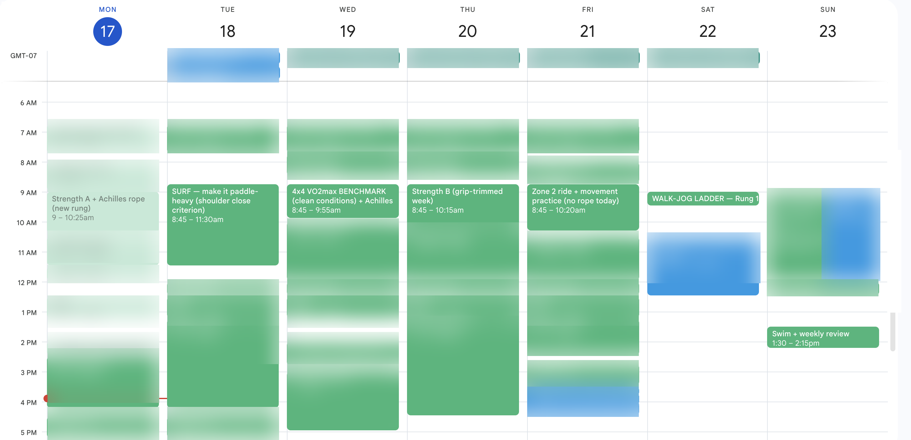
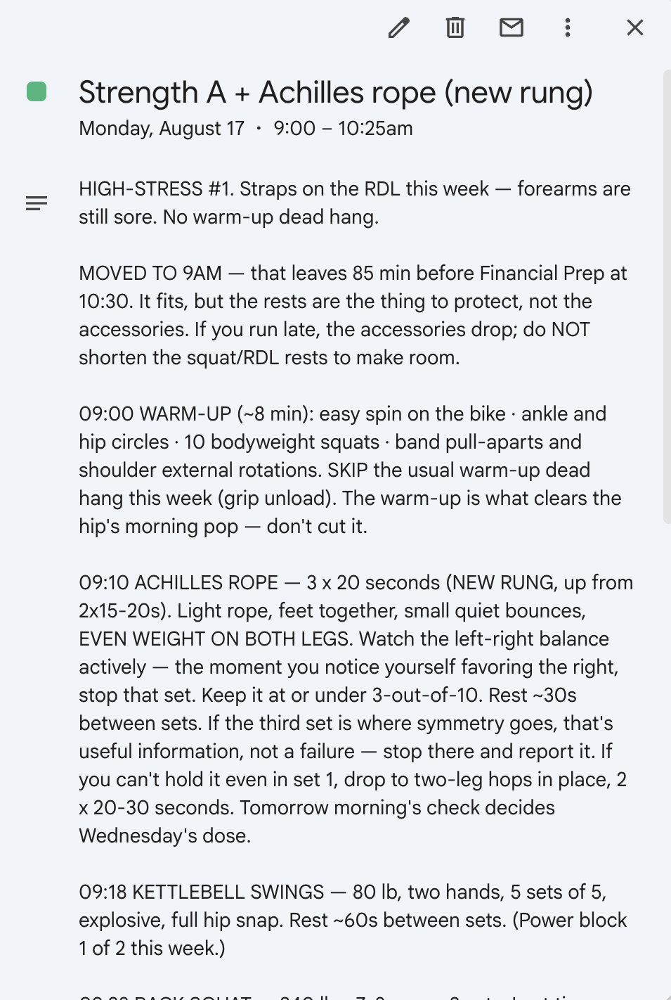

Case study · Summer 2026
Fitness advisor: a case study
A personal training system that fits into my life: how it works, and how it was built.
The problem
I wanted a humane, evidence-based fitness program that was deeply integrated into my life. My schedule changes constantly. I'm nursing four minor injuries. I keep learning things I want my training to absorb. And the core problem: I'm down to 30 minutes today to exercise. How do I best spend those 30 minutes? What's the highest-impact activity for me, against all of my goals, constraints, and everything I've done over the past few weeks? Answering that question on the fly is hard.
An online program leaves the adapting to you. A personal trainer only sees a slice of your week. They can't re-plan around your Tuesday meeting schedule. Managing the programming yourself is a massive manual effort, and the people who need this don't have the time. What actually happens is that we don't follow a program at all. Our "program" is mostly whatever we feel like, or whatever happens to happen, and our results reflect that.
I'm not at my best every day. I might not have slept well. I'm a human. Some days I want more time with my kids. Some days the surf is good and the existing plan goes out the window. All of that has to be input to the system, not deviation from it.
So I built an advisor that answers the question. I'm using fitness as the subject of this case study because it's a domain people broadly understand, and it's big enough to go both broad and deep. It extends into sleep, stress, energy management, nutrition, sport-specific skill, mindset, and more. The principles here each deserve their own deeper write-ups, and those are coming. This piece shows the principles in practice.
What it is
A personal training advisor that reasons from an auditable knowledge base. It's not an app. It's primarily a git repository: a folder of plain-text files with a complete change history. Claude operates on top of these files as an advisor, with conversation as the primary interface.
In practice I rarely type. Session logs, complaints, and questions all get spoken out loud, reducing the burden of input below the threshold of annoyance. It answers in conversation, on the calendar, and in its own files, and it works alongside the other advisor systems I run.
The knowledge lives in a chain: sources → claims → modality dossiers (one working file per kind of training) → my plan → the live week → dated sessions. A claim is a sourced, versioned assertion, marked with how solid the evidence actually is, like "~10–12 hard sets per muscle group per week is the primary programming lever." Take a number from any session and you can walk it backward through the plan, through a claim, to a source. The architecture supported multiple people from the start. The vetted knowledge is shared, and everything personal stays in each person's separate files. So far the only user is me.
knowledge/claims/C001-strength-weekly-volume.mdverbatim
---
id: C001
rev: 1
statement: "~10–12 hard sets per muscle group per week is the primary
programming lever for strength/hypertrophy in trained adults; adjust
up or down on recovery and progress."
modalities: [strength]
depth: vetted
status: active
sources: [luks-2025-muscle-consensus, rt-volume-dose-response]
revised: 2026-06-15
---
The consensus headline. For a broad GPP goal (not bodybuilding), count by
movement pattern (squat, hinge, press, pull, carry) rather than per-muscle
bookkeeping.
show the deep vetting pass
Deep pass (2026-06-15): Confirmed; rev held at r1. Meta-regression evidence (Schoenfeld 2017; Pelland 2024/2026): hypertrophy follows a graded dose-response in weekly sets, with diminishing returns and no sharp plateau in the studied range; strength is much less volume-sensitive than size.
Day to day it runs on conversation. "Surfed two hours" is a complete entry: it goes in the training log, counts toward the week's targets, and shapes the next recommendation. A weekly review runs on its own schedule: it syncs the wearables, checks the structure's integrity, computes what's owed against my targets, surfaces expired injury reviews, and drafts next week against my actual calendar. Sessions land on the calendar spelled out in plain language.


The calendar shows the intended week, and ideally you follow it. But when life diverges (a meeting lands on a session, sleep goes bad, the waves turn good), the system credits whatever actually happened and rebuilds the rest.
How a week runs: modalities, targets, debt
Everything trainable lives in a registry of modalities: strength, power, VO2max, aerobic base, tendon, mobility, and movement. Activities, like surfing, lifting, hiking, skating, or walking, give credit against one or more modalities. My plan gives each modality a weekly target and a floor. The floor is the minimum acceptable dose. The target is the full intended dose. The log credits doses against those targets, so two hours of surf is credited against aerobic base. Debt is how far behind each modality is, and it's computed by a script, not vibes. So when I ask what to do with my next available 30 minutes, the answer is whatever pays down the highest debt and fits my current constraints.
people/laurence/plan/current-week.md · the weekly reviewAug 17, 2026
Last week was a good week with exactly one hole in it, and the hole is VO2max. Measured properly (Mon Aug 10 → Sun Aug 16): strength 2/2 · power 2/2 · tendon 4/5 · mobility 3/5 · aerobic base 293/210 · movement 1/1 — and vo2max 0/1, the only breach. Nothing else came near a floor. Priority #1 in your own weighting is the aerobic engine, and the base is thriving; it's the ceiling work that's missing.
people/laurence/progress.md · generated by scripts/progress.pyAug 16, 2026
modality 06/22 06/29 07/06 07/13 07/20 07/27 08/03 08/10 streak strength ■ ■ ■ ■ · ■ ■ ■ 3w power · ◪ ■ · ◪ ◪ ■ ■ 4w vo2max ■ ■ ■ ■ ■ ■ ■ · 0w aerobic-base · · · ◪ ◪ ◪ · ■ 1w tendon · · ■ ■ ◪ ◪ ■ ◪ 6w mobility · · ■ ◪ ◪ ◪ ■ ◪ 6w movement ◪ ◪ ◪ ◪ ◪ ◪ ■ ■ 8w ■ hit target ◪ met floor · below floor
The measurement is also accountability. It's easy to delude yourself into thinking you're doing more than you are. The credited week says what actually happened.
The care model: cases, gates, standards
Anything that goes wrong, like an injury or limitation, becomes a case with a severity and a review-by date. A case expires unless evidence renews it, which is how the system avoids overcaution. Coming back from an injury is a ladder of tested rungs (again, based on evidence). Above all of it sit personalized capability standards and a quarterly test. Progress means meeting or exceeding standards, and a regression becomes a named priority among the other goals.
people/laurence/plan/current-week.md · watch itemsAug 17, 2026
🟢 Right shoulder — MONITORING as of 8/17. Both provocateur loops
closed. Close criterion: one paddle-heavy surf (~75–90min) clean.
Review 9/14. → cases/right-shoulder.md
🟢 Left Achilles — rung advanced 8/17: rope goes to 3×20s. Even
weight, stop on favoring, ≤3/10, next-morning rule. Review 9/7.
✅ Medial knee — CLOSED 8/2. Bulgarians unrestricted.
🟢 Left hip/SI — downgraded 8/10, "has actually been great."
Warm-up clears the morning pop. Review 9/14.
🟡 Sleep/recovery — held 8/10, no restriction. Review 9/7.
🟡 Both forearms — NEW 8/17, low-grade. […] No movement
restriction — crawling stays, titrated ≤3/10. Re-read 8/23.
There is no optimal, only optimal-for-me, right now
This system is built to fit me specifically. My goals: longevity, feeling good, capacity at 80, and aesthetics. Yours might be a marathon or handling a pre-diabetes diagnosis. The system encodes those goals and optimizes against them, because there is no optimal program in the abstract. There's what's optimal for you, right now. The anti-goals are encoded too. The one that outranks everything else for me is avoiding injury. And when a week can't hold everything, a priority order I've set in advance decides what wins.
For example, VO2max is one of the strongest markers correlated with longevity*, so it earns its place in the program as part of the aerobic modality. The study we landed on says two hard sessions a week is the technically optimal dose. I do one. The second would cost a slot I need for other modalities that matter more across my goals, and it would add a high-stress session to a week that doesn't have room for more stress. You could build a "perfect" exercise week that leaves you without enough energy to hit your bar for being a good parent/partner/coworker. That tradeoff is unacceptable. The result is one quality VO2max session a week to hold the ceiling and easy aerobic volume to grow the engine underneath. While technically suboptimal, it's optimal for me. Because we're tracking the goal, the system surfaces when progress stalls. Optimal is a moving target.
The system carries the cognitive load
Running a program well means integrating a lot at once: everything you've done recently, what ideal programming says, your calendar, any injuries, today's energy, how you slept, the set math and progressive overload rules, how fast to advance which kind of loading. Past a few components it's unrealistic to manage the optimization yourself. This is why most of us base our workouts on a few crude heuristics. All of that load lives in the system now. It knows if I'm tired, because my Oura ring (a sleep and recovery tracker) is synced. It won't stack high-stress work onto a bad night. Sleep debt outranks training debt.
from the advisor session logAug 14, 2026
Laurence
[…] I feel pretty terrible today. I didn't sleep well last night. I'm not feeling the 4x4. I might just stick with some rehab and light movement, maybe a walk with my wife after lunch […] I don't think it makes sense to push.
Advisor
Your own rule is in force here — sleep debt outranks training debt, and "not feeling it" before a hard session is precisely what the swap exists for. Not pushing is the right call, full stop. Let me pull last night's data and adjust the day:
(Oura sync: 5.55 hours, readiness 63. The advisor rewrote the calendar event, then continued:)
Advisor
Everything's adjusted — the calendar event now says what today actually is, and the swap is logged as the rule working, not a miss.
It compounds
The knowledge base doesn't assume completeness or a fixed structure. This allowed it to start rough and function right away, while getting vetted over time. For example, the "twice a day" tendon dosing from the research turned out to rest on lab-grown tissue rather than human tendons. The claim was revised, and the revision propagated automatically through every dossier, plan, and session built on top. Any interesting new data or bro science is easy enough to throw into the mix for research and consideration as a claim. Intake is fast, so if something better than my current protocol appears tomorrow, I can integrate it immediately. The system isn't yet self-improving, but an automated research loop could keep it up to date.
git show eb4f4f5 · knowledge/claims/C016-tendon-microdosing.mdJun 15, 2026
-rev: 1 +rev: 2 -statement: "Connective-tissue loading saturates in short bouts (~10min) - and recharges after ~6h, so frequent micro-doses (near-daily, even - 2×/day) beat rare long sessions for tendon adaptation." +statement: "Tendon collagen synthesis saturates within a short loading + bout (~10min) and stays elevated ~24–72h afterward, so short doses on + most days are what matter — frequency beyond once-daily adds little + proven benefit in human tendon." -depth: fast-pass +depth: vetted
Elite attention, made ordinary
This level of integrated attention has always existed for people who can afford a team. Think of professional athletes or executives at the largest companies. You can also make an equivalent case around food. You can cook well for yourself at home, but a chef who knows your goal calories, macros, and your tastes delivers more than is feasible for the majority of people. I saw the same shape at BetterUp, where coaching was primarily targeted at the executive level and the work was pushing it further down the org chart. This system is that attention pattern, running for one ordinary, busy person. To be clear, it isn't free or even that cheap. The AI tooling costs real money. But that cost keeps falling.
It gets to the bottom of things
I've written about step zero: confirming what the problem actually is before working on it. This system runs step zero constantly, on me. When something goes wrong, the plan doesn't bolt on a fix. Sometimes the whole structure rebuilds around solving the one thing. When I felt like my left ankle was losing range of motion due to rehab exercises, the answer was a two-minute measurement, which invalidated the hypothesis. The left had a centimeter more range than the right. The honesty machinery is the same accountability a good trainer provides. You think it's one thing, it might be another, and the back-and-forth loop keeps you honest.
from the advisor session logAug 7–8, 2026
Laurence
[…] is it possible I'm losing range of motion in my left ankle? It feels like when I get into a squat, like to brush my teeth, it doesn't feel quite the same. […]
Advisor
Your observation is plausible and has a clean mechanism: deep-loaded dorsiflexion has been deliberately restricted since mid-June, and weeks of heavy-slow calf loading stiffen the complex. But felt-sense in a daily squat is a hypothesis, not a measurement, so here's the test — knee-to-wall, tonight or tomorrow […] Two minutes, and it converts "doesn't feel quite the same" into a number.
Laurence · next day
And in a weird twist of events, when I measured, it looks like there's about a centimeter more flexibility in my left ankle than my right ankle, which is not what I expected.
Advisor
Both logged — and the twist is my favorite kind of result, because the measurement just did exactly what it exists to do: kill a plausible-sounding hypothesis before it became a program. If we'd gone on feel, you'd now have ankle-mobility homework for a deficit that doesn't exist. […]
On my side
The whole system is plain files in a repository I own. Data flows in from devices and services. Everything it knows about me lives there, easily readable and portable. Nothing about me is trapped in anyone's platform. No engagement metrics, no one else's incentives anywhere in the loop. That alignment changes the time horizon of the programming. Most programs and trainers operate on a short clock, but a system that's only accountable to you can think in decades. Some problems get solved differently on a longer horizon. On a longevity horizon, rushing the comeback from an injury to save three weeks is a bad trade. And when something doesn't fit, I change it along the dimensions I care about. Most software hardens around you and you live inside its limits.† A system this integrated into your life has to reshape itself as your circumstances change.
It knows what it isn't. Mostly.
Would a trainer be better? Better at what? The honest comparison is jagged‡. This system is better than anything I could buy in some ways and clearly short of a great in-person trainer in others. I've also noticed I'm less guarded given the lack of social pressure that comes from a human coach. The downside is, of course, that I also don't benefit from the deeper motivation of not wanting to let someone down. The advisor can't (yet) watch your squat, put hands on your shoulder, or teach a beginner the movements. This isn't a teaching tool, and it wouldn't work for someone starting from zero. For a beginner it would start working only after a few sessions with a professional to learn the movements, mental models, and vocabulary. They would also need to learn how to interact with the system itself. What it does well is route to humans at its edges. When my shoulder recovery plateaued, I needed to find an actual physical therapist and bring back a program we could integrate. The job is managing what it doesn't know, what I don't know, or what's simply missing. Honestly, though, it only partly knows its own limits today.
from the advisor session log · sleep caseJul 23, 2026
Advisor
[…] So here's the line I've written into the case, and I want you to know it's there: if the rough days persist past the deadline and the weekend — into early next week — then my recommendation moves from "watching" to "active": a therapist who works the burnout side directly becomes part of the plan, the same way Hinge became part of the shoulder plan. Not because something is broken, but because that's the right specialist for this tissue. This system tracks and supports; it doesn't treat — and I'd rather say that clearly now than late.
Both of us get smarter
The system explains what it's doing and why. It's how trust gets built, and it's how I learn. I push on it, and the pushing improves us both. For example, I asked why a Tuesday was programmed the way it was, and got back an audit of the rules and an interesting edge case. My confusion had caught something the plan missed. The system-level loop is that my questions make the system better and its explanations make me better.
from the advisor session logJul 28, 2026
Laurence
[…] I still don't understand today: why would I do the 4x4? It's going to be taxing on my legs. Why would I do that and then do single-leg? Why would I do Bulgarian split squats? My legs were already taken care of yesterday […] what's the basis for this kind of programming, and what are the rules that go into it? Are you following those rules?
Advisor
The rules I program against, in order of hardness:
1. ≤4 high-stress days per week (systemic recovery cap — a hard rule in the knowledge base). This week has 2. ✓
2. ~48h before loading the same pattern heavily again. Heavy squats Monday → heavy squats Tuesday would violate this. But Tuesday's legs weren't that: the 4×4 is cardiovascular work at ~250W, and Bulgarians at 30s+vest are moderate single-leg work in a different pattern. Tissue-wise, Tuesday was legal.
show the rest of the exchange
Advisor · continued
3. Consecutive hard-ish days are a legitimate compression tool — not ideal, but standard practice when the calendar forces it. The trade I made: your Wed–Sat don't exist this week, so both remaining floors got packed into the last two available days, with four recovery days right behind them.
So: was the plan within the rules? Yes. But here's where your instinct beat the plan, and I want to name it: the plan assumed Monday's session at 3:30pm — about 17 hours before Tuesday morning. When your day pushed the session to 7:45pm, that gap collapsed to ~12 hours, and the plan's premise quietly broke. The right move at that point was to downgrade Tuesday automatically — the system didn't, and you caught it by feel this morning. That's exactly the kind of adjustment I should make the standing rule, so I'm making it one: when a session slides more than ~3 hours later than planned, the next morning's session gets re-checked before you touch it.
Laurence
Okay, and I definitely intend to do the 4x4 today, so you should throw that one back on. […] I wasn't asking you to fully abandon the 4x4, particularly
Advisor
Got it — my overcorrection, not yours. The 4×4 goes back in; the Bulgarians were the right thing to question and they stay optional-leaning-skip. Fixing both places:
How it was built
The first working version came to life in six days, and it has been in near-daily use since. Most of the design came from seeing what broke in daily use and fixing it as part of using the system.
Input had to be effortless (via voiced conversation) or it wouldn't happen. Dose math and integrity checks run in plain scripts, and the model spends its judgment where needed. There's only one session longer than a minute, which is the scheduled weekly review.
Memory was the first thing to break. At first, everything I told the system went into one growing pile of notes, and within weeks the advisor was reading stale notes next to fresh ones and treating both as true. Now every issue gets its own file that holds its whole story. My shoulder has one, and so does my Achilles. Day to day the advisor reads only a short summary of where things stand, and it opens the full file when that issue is in play. Once a month, whatever closed gets archived.
The habit that paid off most was traceability. Writing down why every number exists felt like bookkeeping until the first claim revision, when the fix flowed to every file that depended on it.
It primarily reads and writes to my calendar, but it also writes flags other systems can use. That handoff runs through a persistence layer I'll write about in a future piece.
Two things surprised me. The obstacle wasn't intelligence, but access to my calendar, sleep, logs, and history. Extending the system to a second person showed me how enormous the distance is between a hand-in-glove system built around one person and an actual product. This chat-shaped interface works for a technical systems-thinker and is nothing like an app most people would use.
Why not just Claude or ChatGPT?
A raw model holds every training philosophy at once, and that's the problem. Someone still has to collapse all that possibility into one point of view that fits one person: the method, numbers, and trade-offs. The "harness" is that collapsed, opinionated point of view, so the approach never gets re-decided from vibes at 6am. This requires persistent state, knowledge that's vetted and versioned, arithmetic that's deterministic, a schedule that wakes itself, and a record of its own mistakes. The hard part is extracting experts' tacit rules into a structure the system can use. Where depth matters, you still go to real experts. The model is broad; expertise is narrow and deep, and pulling knowledge out of experts' heads is the same hard work it always was.
Current gaps
There's plenty the system doesn't do. It doesn't handle nutrition, and for some people diet is their single biggest lever. It isn't a health advisor either. It has no motivation layer, which may be someone's primary sticking point to following any fitness program. It can't track anything on its own during a session; I'd love a watch app or video feedback, but neither exists yet. I am its eyes and ears. It can only advise me well because I notice what's happening in my body, discern what matters, and effectively report it after the session. That's a skill, which not everyone has. Better input channels are a big part of where this goes next. The truth is the system is full of holes that I patch without noticing, just because of who I am. Your holes would be different, and a version for you would have to cover them.
What transfers
This happens to be a fitness system, but it's one part of a larger constellation of advisors that work together, and the recipe is domain-agnostic. You encode your goals and constraints as first-class objects, source your claims, separate judgment from arithmetic, wire it into your real life, let it run, and correct it when it's wrong. This is the first time I've been able to build a fitness program that knows my life and reacts appropriately to it. I know tomorrow will be what I intended it to be, and when it isn't, I adjust the system until it's right.